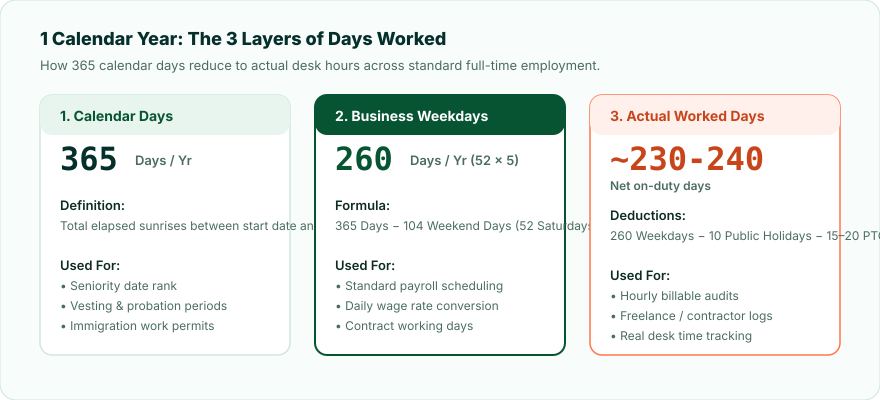
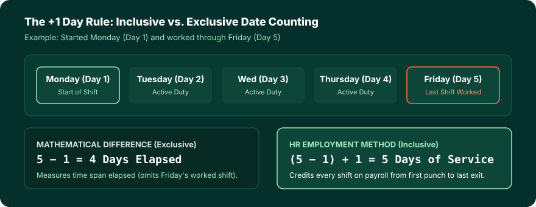

Quick answer
Total days of service = (end date − start date) + 1. The +1 counts both your first and your last day. Calendar days include weekends and holidays; business weekdays exclude them; net worked days also subtract holidays and paid time off.
Why total days of service matters
Most people describe tenure in rounded milestones — “three years” or “eighteen months”. HR systems, payroll software, labour statutes and pension trustees work in exact day counts instead, and the difference matters in high-stakes situations.
Probation windows are often a strict 90, 120 or 180 days; crossing the threshold by a single day can change termination protections or trigger permanent status.
PTO that accrues per day, severance formulas that step up at exact day milestones, vesting schedules that require a minimum number of continuous days, and immigration authorities counting exact days of employment all audit the same number.
Calendar days vs. working days
When you ask “how many days have I worked?”, the answer depends on which of three things is being measured: calendar span, scheduled business days, or net physical desk time.
1. Total calendar days. Every day between the start and end dates, including weekends and holidays. This is the legal standard for seniority, retirement vesting and benefit eligibility.
2. Business / working days (weekdays). Monday to Friday only. A non-leap year has 52 weeks plus 1 day, giving 260 or 261 weekdays and 104 or 105 weekend days, depending on which weekday the extra day falls on (2026 has 261 weekdays; 2023 has 105 weekend days).
A leap year has 2 extra days, giving 260 to 262 weekdays (leap year 2028, starting on a Saturday, has only 260 weekdays and 106 weekend days).
3. Net actual worked days. Weekdays minus public holidays, PTO and sick leave. Net worked days = 260 weekdays − (about 10 public holidays + 15 to 20 vacation and sick days) ≈ 230 to 235 days per year.

The inclusive “+1 day” rule
The most frequent error in service-day calculations is simple subtraction: end date − start date. Pure subtraction measures the elapsed interval between two midnights. If you start work on Monday morning and finish your final shift on Friday afternoon, subtracting Monday (day 1) from Friday (day 5) gives 5 − 1 = 4 days.
But you were physically on duty for 5 distinct shifts.
HR systems apply inclusive counting:
Total days of service = (End date − Start date) + 1.
Both the first punch-in and the final departure are credited. If your last day of work was 24 September, both your first day and your last day count.

Worked example
Start date Monday, 2 January 2023. End date Sunday, 15 March 2026.
Start date 2 January 2023, end date 15 March 2026
Step 1 — Elapsed days. 15 March 2026 − 2 January 2023 = 1,168 days.
Step 2 — Inclusive total. 1,168 + 1 = 1,169 total calendar days of service.
Step 3 — Weekdays. Counting Monday to Friday across the same span gives 835 weekdays.
Step 4 — Calendar decomposition. The same span is 3 years, 2 months and 13 days; in weeks it is exactly 167 weeks.
Step 5 — Leap days. The span crosses one leap day, 29 February 2024.
Result: 1,169 inclusive calendar days, 835 weekdays, 3 years, 2 months, 13 days.
A second, shorter case: start 4 March 2024, end 20 June 2025. Elapsed days = 473; inclusive total = 474 days; weekdays = 340; calendar decomposition = 1 year, 3 months, 16 days; leap days crossed = 0, because 29 February 2024 falls before the start date.
Leap years
The Gregorian calendar adds 29 February once every four years (years divisible by 4, excluding century years not divisible by 400). A leap day inside the service window adds one credited day that a flat year multiplier misses.
One non-leap calendar year is 365 days; one leap year is 366 days. Four consecutive years containing one leap year total 365 × 3 + 366 = 1,461 days, an average of 365.25 days per year.
Example: an employee who worked from 1 March 2023 to 1 March 2024 has 367 inclusive days, because 29 February 2024 falls directly inside the window. A simplistic formula of 1 year × 365 would undercount their service by 1 full day.
Tenure milestone reference table
Read across for the milestone, its calendar span, and the weekday range. Weekday ranges depend on which weekdays the span covers, so they are ranges, not single numbers.
| Milestone | Calendar days | Business weekdays | Typical HR significance |
|---|---|---|---|
| 90 days | 90 | 64–65 | Standard probationary review |
| 180 days | 180 | 128–130 | Extended probation / health insurance vesting |
| 1 year | 365 (366 leap) | 260–262 | Annual review, 401(k) match eligibility |
| 2 years | 730–731 | 520–523 | Statutory severance step-up (UK / EU) |
| 3 years | 1,095–1,096 | 781–784 | Graded equity vesting milestone |
| 5 years | 1,826–1,827 | 1,304–1,305 | Full cliff vesting, service award |
| 10 years | 3,652–3,653 | 2,608–2,610 | Decade tenure milestone, enhanced PTO bracket |
Calculating days worked in spreadsheets
With the start date in cell A2 and the end date in cell B2, total inclusive calendar days is =(B2 - A2) + 1, or =DATEDIF(A2, B2, "d") + 1.
Business days excluding weekends and public holidays use =NETWORKDAYS(A2, B2, Holidays!A2:A15), where Holidays!A2:A15 holds the organisation’s list of paid observed holidays.
Common mistakes
- The midnight boundary trap. Databases store dates as timestamps; pure integer subtraction of two timestamps on the same day gives 0 even though a full shift was worked.
- Unpaid leave vs active service. Extended unpaid leave may suspend credited service days while keeping the seniority hire date intact. Confirm whether your organisation counts active days on payroll or elapsed calendar span.
- Rehiring gaps. If you left and were rehired six months later, total days of service is the sum of both active segments, not the span from the original hire date.
- Multiplying years by 365. Flat year multipliers miss every leap day inside the window.
- Counting only weekdays for a tenure total. Tenure and vesting use calendar days; weekdays are a separate measure.
Frequently asked questions
How do I calculate how many days I have worked?
To calculate total calendar days of service, subtract your start date from your end (or reference) date. For formal HR tenure and payroll records, you add +1 day to make the count inclusive of both your first and last shifts: Total Days = (End Date − Start Date) + 1.
What is the difference between calendar days worked and working business days?
Calendar days measure every elapsed day on the calendar (including weekends and holidays, totaling 365 or 366 days/year). Business or working days exclude weekends (104 or 105 weekend days in a non-leap year), resulting in a standard of about 260 workdays per year, or about 250 days after subtracting statutory public holidays.
Why do HR departments add 1 day to service date calculations?
Standard mathematical subtraction (Date B − Date A) measures elapsed time between two midnight timestamps. Because an employee works both their first day on duty and their final day before departure, HR systems use inclusive date counting: (Date B − Date A) + 1 day to ensure full payroll credit for both working days.
How do leap years affect my total days of service?
A leap year adds February 29 (366 days in the year instead of 365). If your employment period crosses a leap day (such as Feb 29, 2020 or Feb 29, 2024), your total days worked will be 1 day higher than the same calendar span in non-leap years.
How do I calculate days worked in Microsoft Excel or Google Sheets?
For calendar days including both start and end dates, use =DATEDIF(A1, B1, "d") + 1 or simply =(B1 - A1) + 1. For business days excluding weekends and public holidays, use the formula =NETWORKDAYS(A1, B1, Holidays_Range).
How does a 90-day probation period calculate in practice?
A 90-day probation period counts 90 consecutive calendar days from your official hire date (including weekends). To find your completion date, add 89 days to your start date. For example, if you started on January 15, your 90th day is April 14 (or April 13 in a leap year).
Takeaways
- Total days of service = (end date − start date) + 1.
- Calendar days, business weekdays and net worked days are three different numbers — say which one you mean.
- Every leap day inside the window adds one credited day.
- Use NETWORKDAYS with a holiday list for business days, never a flat multiplier.
- Rehires and unpaid leave split the count into segments.